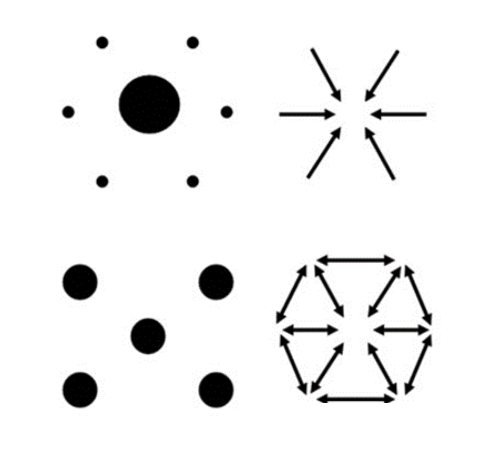
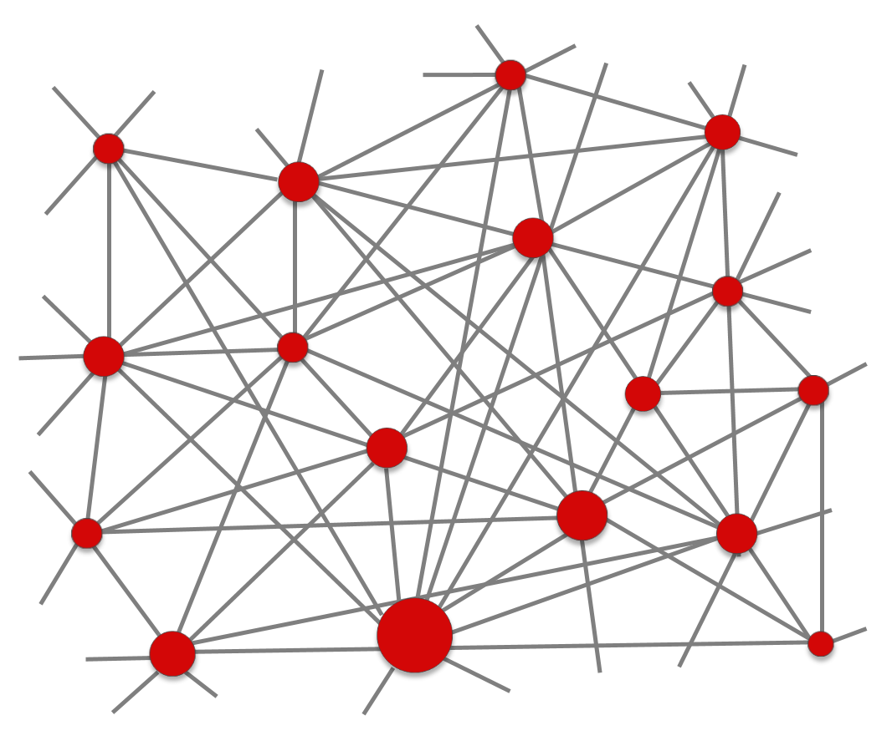

| POLICENTRISMO E RETICOLARITÀ: UN NUOVO MODELLO DI ANALISI | |
|  L’area dismessa del Gres come polo di rigenerazione urbana |
I tradizionali modelli monocentrici che prospettano il
funzionamento delle città a partire da un unico centro dominante, risultano
incapaci di descrivere e interpretare le più complesse dinamiche urbane
contemporanee. Il loro limite è reso palese dalle patologie territoriali che la crisi economica degli ultimi anni ha fatto
emergere in tutta la loro evidenza, dovute agli
scarti temporali tra l’insorgenza di nuove esigenze e il
ritardo nell’adeguamento territoriale. Tali scarti producono un deficit oppure
un eccesso di territorializzazione: il primo quando la società esprime
bisogni e attese che il suo territorio non è in grado di soddisfare; l’eccesso,
viceversa, si determina allorché il territorio costruito in precedenza contiene
e sviluppa più complessità di quanta sia necessaria al corpo sociale che lo
abita per vivere e riprodursi (Turco, 1988). Infatti, le nostre città presentano un eccesso di edifici e funzioni nel centro e un loro deficit
in periferia: nel centro gli spazi pubblici necessitano di una rivitalizzazione,
i palazzi si svuotano e gli esercizi commerciali e gli uffici risultano in
sovrabbondanza; nelle periferie è sempre più pressante la richiesta di nuovi
alloggi popolari, la riqualificazione dei servizi, oltre che una risposta al
consumo di suolo - usato male o inutilizzato – conseguente alla presenza di un
consistente numero di costruzioni obsolete e dismesse. In sintesi, si richiede
una riconversione degli spazi e delle
funzioni del centro e una rigenerazione
qualitativa delle periferie, interventi che non possono essere tra loro
disgiunti. Il
dualismo tra un nodo principale ad alta densità demografica e ad alta rilevanza
funzionale e il resto del territorio circostante, ad esso subordinato,
sinteticamente definito nel tradizionale rapporto centro/periferia dove il centro e la periferia avevano obiettivi e
peculiarità differenti, è ormai definitivamente superato. Tale modello è stato sostituito da quello policentrico che inquadra il funzionamento di una città sulla presenza di una varietà e pluralità di centri al proprio interno. A prescindere dalla dimensione demografica o funzionale della città, tali centri agiscono in base alla loro distribuzione e alle conseguenti relazioni di integrazione e interdipendenza che creano (Suarez-Villa, Walrod, 1997; Kloosterman, Musterd, 2001). Si tratta di un modello che interpreta una città aperta, proiettata all’esterno, oltre le mura: una “città” immessa nella rete mondializzata dove non esistono più un locale e un globale, ma in cui le due dimensioni scalari interagiscono sia al suo interno che all’esterno. È l’approccio fondato sul policentrismo e sulla reticolarità, le due chiavi di lettura della città contemporanea alla luce del fenomeno della mondializzazione (Lévy, 2008). |
|  Modellizzazione della struttura reticolare e policentrica di una città |
|